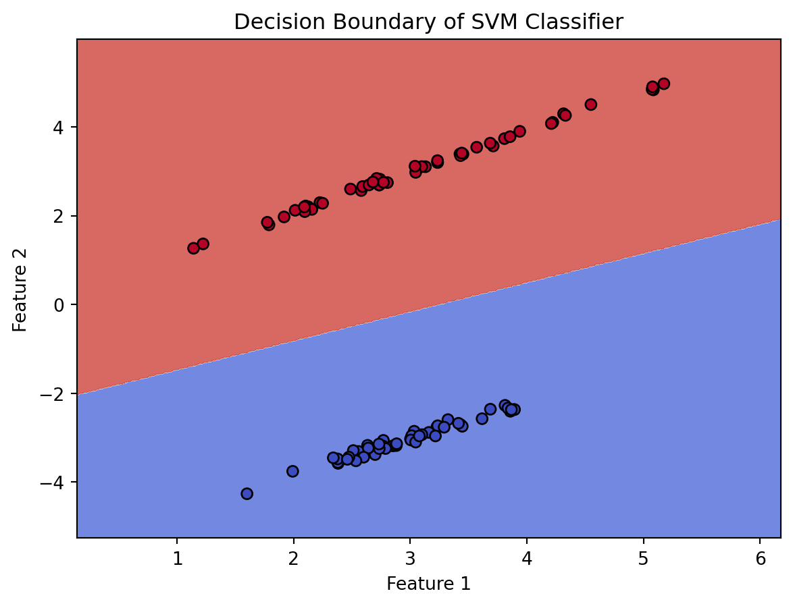
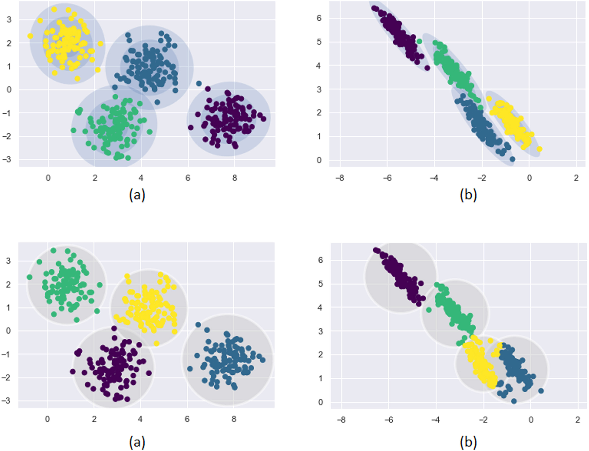
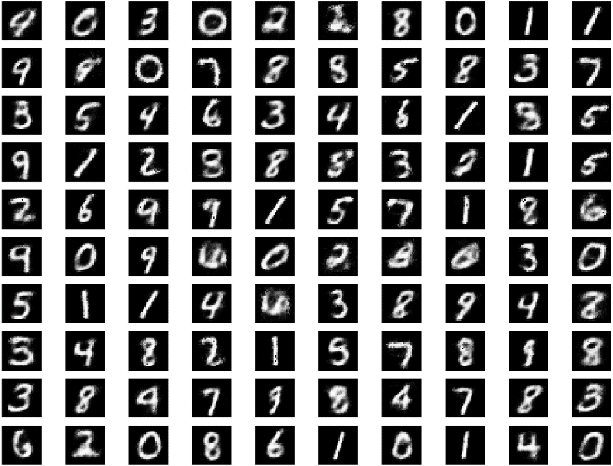

Introduction
Over the years, machine learning algorithms have become a more important part of our lives. We are surrounded by machine learning algorithms, from the rise of large language models (LLMs) like ChatGPT over the years to machine learning algorithms recommending videos to users on streaming sites. One of these machine learning algorithms or models is known as generative artificial intelligence (AI). Some examples include ChatGPT which can generate explanations and explain concepts in a manner that the user specified. Moreover, there are generative AI such as Stable Diffusion which can generate images from a text prompt. Figure 1 shows an image generated using Stable Diffusion which depicts a post-apocalyptic cityscape as an example prompt.
Contrary to generative AI, there is discriminative AI which can decide on the decision boundary between different outputs. They essentially take existing data and learn where to draw the lines such that new information can be put in the proper section. However, generative AI instead learns the actual distribution of the data so that it can generate the data the model learned. This means that they can generate new data that follows the same distribution as the original data which can also be used to classify new data.
Details of Generative AI
As mentioned previously, generative AI can learn the distribution of the data and make future predictions based on that. They can also generate entirely new data as their output. Their ability to learn underlying distributions of data also allows them to model more complex relationships that are present in real data. Figure 2 below shows an image that depicts the difference between generative and discriminative AI and how they learn the data.

The top row shows generative AI learning the distribution and conforming closely to the data. However, a normal discriminative model is not able to capture the unique stretched nature of the data and there are some overlaps which can be seen in the bottom row. Their ability to better capture the underlying distribution can allow them to be more accurate when trying to model data that is difficult to separate normally. Moreover, they can even generate new data based on the original data they were trained on. For example, Figure 3 shows generated images of the MNIST digit recognition dataset. Generative models such as Naïve Bayes are also used regularly to filter for spam in emails.

Details of Discriminative AI
In contrast, discriminative AI learns the decision boundary for the data. They work by classifying data or making predictions by using the decision boundary they have learnt to sort between the different output classes. Discriminative models work by learning the differences between the various outcomes. For example, a discriminative model trying to predict whether an MRI scan of a brain contains a brain tumor or not might pick up on certain visual differences that do not exist in a tumor-free brain scan (Sharma, Kaur, and Gujral 2014). They are also easier to train and can achieve high accuracy. This makes them useful in medical fields where their decisiveness and speed allow doctors to make faster diagnosis of critical conditions. Figure 4 shows an image with the decision boundary of a discriminative support vector machine (SVM) classifier on some randomply generated sample data.
Conclusion
As seen before, both types of models are suited to different tasks. Generative AIs are suited to generate new data, such as images and text and can be used to kick off creative ideas or for inspiration. They are better suited to model complex relationships that are present in real life data due to their ability to truly learn the underlying distribution and are therefore more suited for complex problems. On the other hand, discriminative AIs are faster to train on datasets, perform faster, and are more decisive. This makes them useful for quick predictions such as object and image detection in pictures and videos as well as in the medical field to detect brain tumors in MRI scans.
Overall, both of these types of AI models provide unique advantages for various tasks, and it is necessary to consider what the problem being asked is. These factors aid in picking the correct type of model to provide accurate results. Regardless, generative AI has become a large part of the modern technological ecosystem with the rise of ChatGPT and other LLMs. We are likely to continue to see these kinds of models evolve alongside discriminative models and being used more and more to handle complex tasks efficiently and effectively.
(Thumbnail photo by Solen Feyissa on Unsplash)
References
GM, Harshvardhan, Mahendra Kumar Gourisaria, Manjusha Pandey, and Siddharth Swarup Rautaray. 2020. “A Comprehensive Survey and Analysis of Generative Models in Machine Learning.” Computer Science Review 38: 100285. https://doi.org/10.1016/j.cosrev.2020.100285.
Sharma, Komal, Akwinder Kaur, and Shruti Gujral. 2014. “Brain Tumor Detection Based on Machine Learning Algorithms.” International Journal of Computer Applications 103 (1).